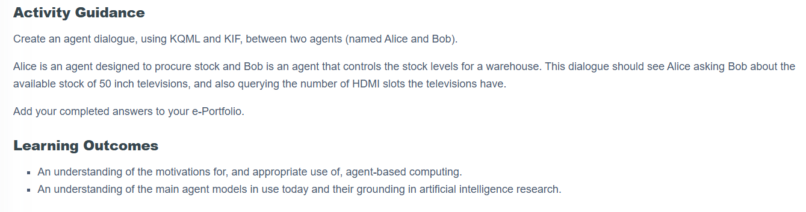
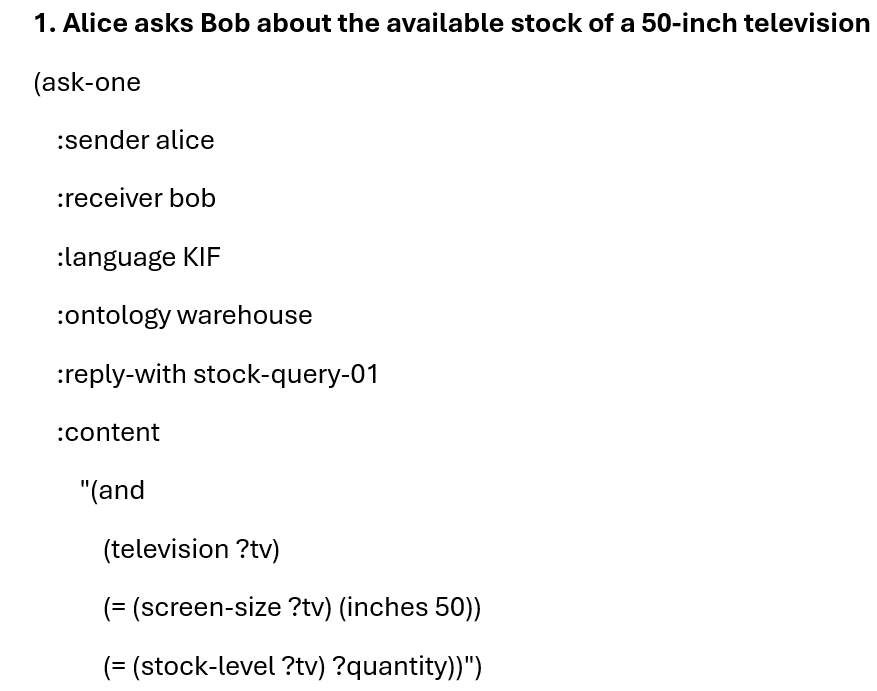
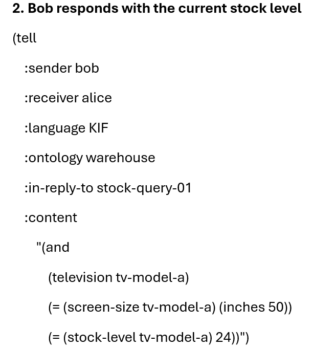
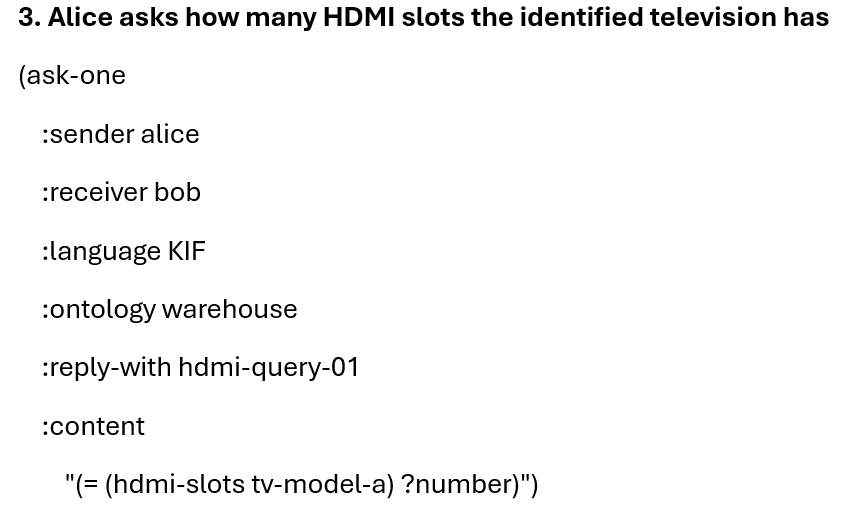
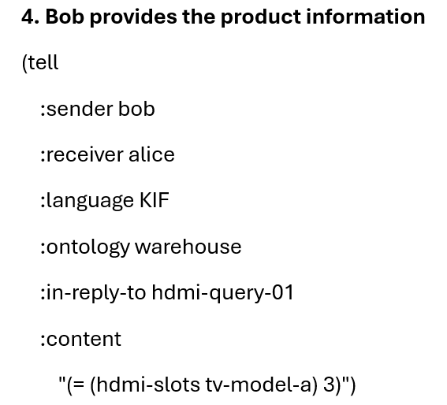

Activity Task

Agent Dialogue Visualisation
Sequence diagram created using Mermaid Live .
Full KQML/KIF Dialogue
Message 1 · Stock Query

Message 2 · Stock Response

Message 3 · HDMI Query

Message 4 · HDMI Response

Reflection
WHAT
Constructing the dialogue changed how I understood KQML. I initially treated performatives mainly as labels, but ask-one and tell encode communicative purpose, while KIF represents the knowledge being exchanged (Finin et al., 1994; Genesereth and Fikes, 1992).
SO WHAT
The activity showed that structured messages do not guarantee shared meaning. Agents still need a common ontology, and semantics based on internal beliefs or intentions may be difficult to verify externally (Singh, 1998).
NOW WHAT
In future iterations of our research-agent system, I would keep deterministic operations such as DOI validation and deduplication under orchestrator control. I would only introduce richer agent communication if greater autonomy required agents to negotiate or challenge decisions directly, and would then define shared message semantics explicitly across agent boundaries.
References
Finin, T. et al. (1994) 'KQML as an agent communication language', Proceedings of the Third International Conference on Information and Knowledge Management, Gaithersburg, Maryland, 29 November-2 December 1994. New York: Association for Computing Machinery. pp. 456-463. Available at: https://doi.org/10.1145/191246.191322
Genesereth, M. R. and Fikes, R. E. (1992) Knowledge Interchange Format, Version 3.0 Reference Manual. Logic Group Report Logic-92-1. Stanford, CA: Computer Science Department, Stanford University. Available at: http://logic.stanford.edu/publications/genesereth/kif.pdf (Accessed: 4 September 2026).
Singh, M. P. (1998) 'Agent communication languages: rethinking the principles', Computer, 31(12), pp. 40-47. Available at: https://doi.org/10.1109/2.735849